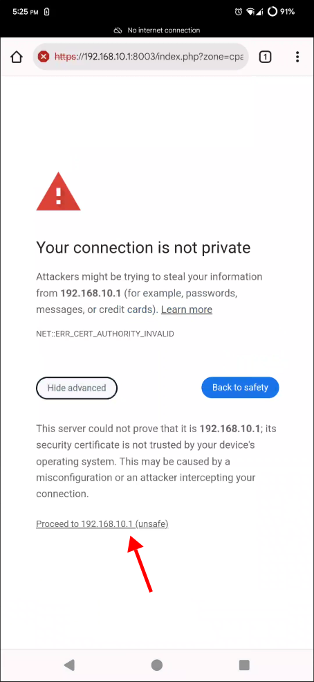
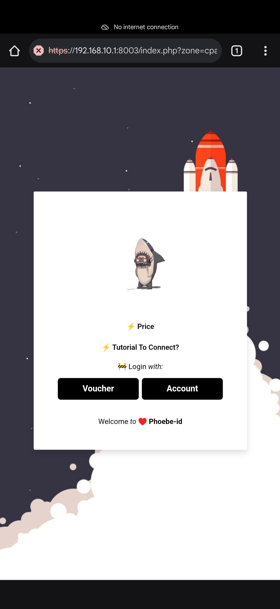
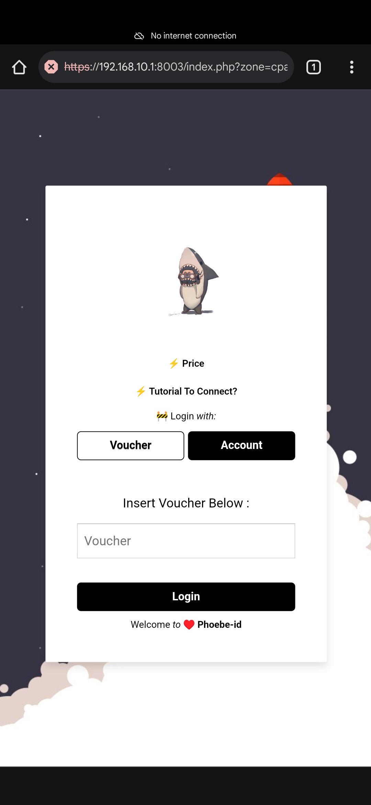
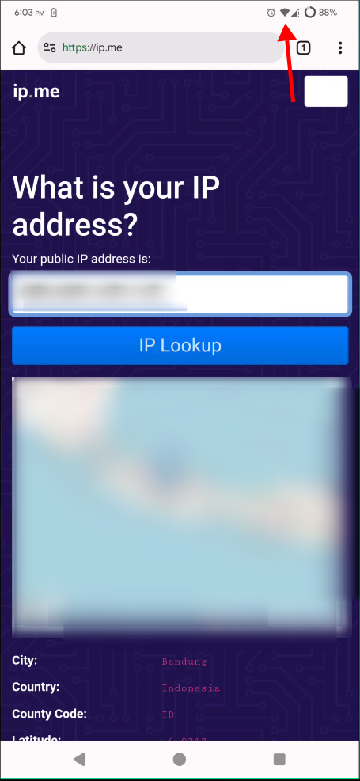
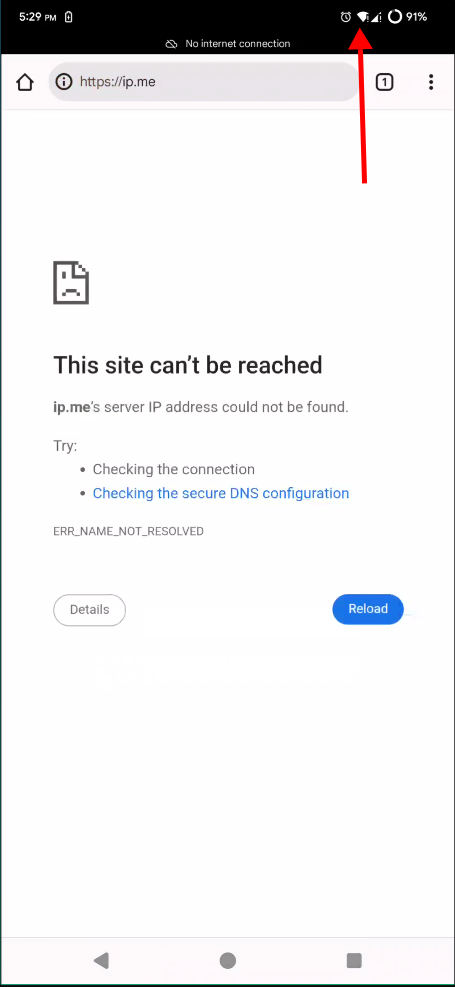

⚡🚧 Langkah connect wifi Phoebe-id
-
1.
Masuk ke wifi "Phoebe-id"

-
2.
Buka browser: brave, firefox, chrome, atau lainnya.
Ketik: 1.1.1.1
( yang penting http://[0-9].[0-9].[0-9].[0-9] ).
-
3.
Izinkan sambungan http,
lanjutkan ke situs (continue to site).

-
4.
Lanjutkan (advanced).
-
5.
Lanjutkan
proceed to 192.168.10.1 (unsafe).
 -
6.
Berhasil masuk halaman login.
 -
7.
Login dengan user dan password
( kosongkan voucher ).
 -
8.
Login dengan voucher
( kosongkan user dan password ).

-
9.
Login berhasil.
simbol wifi tidak ada tanda seru !.
login berhasil versi 1.
 -
10.
Login berhasil.
simbol wifi tidak ada tanda seru !.
login berhasil versi 2.
